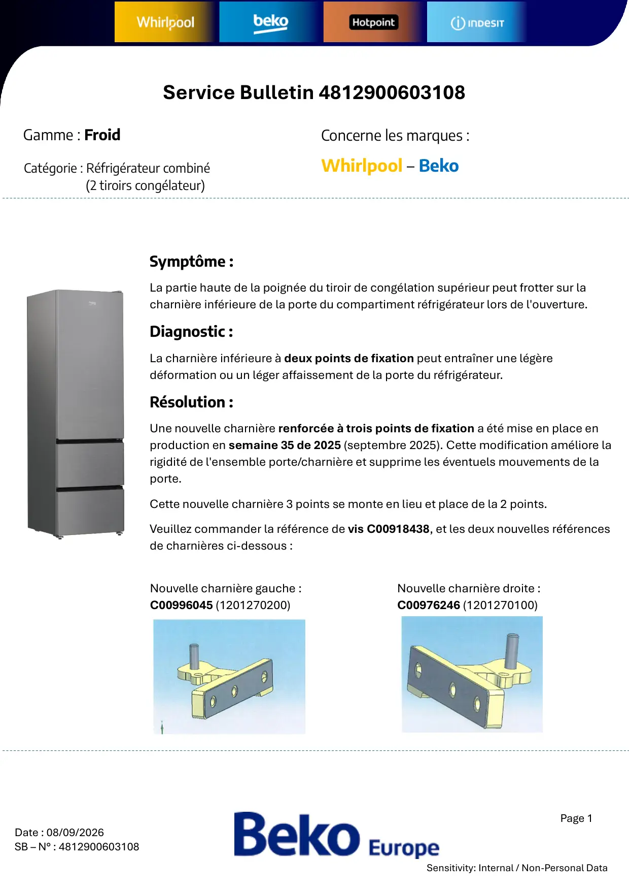
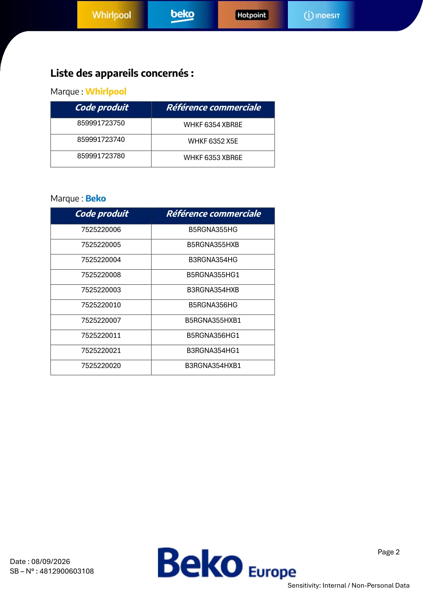
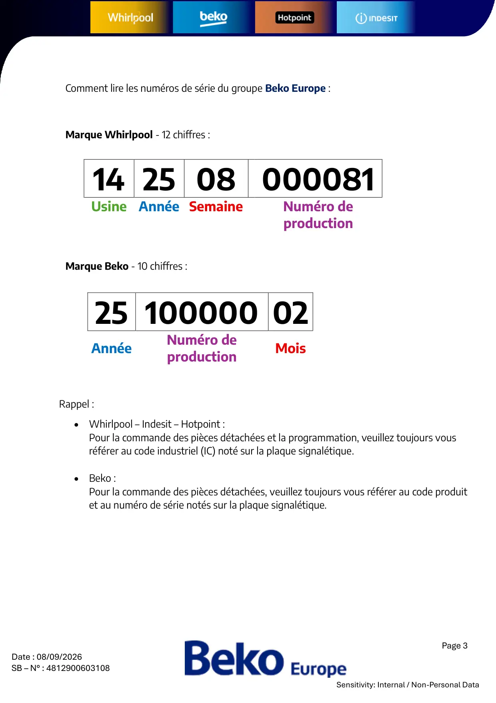

4812900603108 Interférence

Page 1Date : 08/09/2026SB – N° : 4812900603108Sensitivity: Internal / Non-Personal DataSymptôme :La partie haute de la poignée du tiroir de congélation supérieur peut frotter sur lacharnière inférieure de la porte du compartiment réfrigérateur lors de l'ouverture.Diagnostic :La charnière inférieure à deux points de fixation peut entraîner une légèredéformation ou un léger affaissement de la porte du réfrigérateur.Résolution :Une nouvelle charnière renforcée à trois points de fixation a été mise en place enproduction en semaine 35 de 2025 (septembre 2025). Cette modification améliore larigidité de l'ensemble porte/charnière et supprime les éventuels mouvements de laporte.Cette nouvelle charnière 3 points se monte en lieu et place de la 2 points.Veuillez commander la référence de vis C00918438, et les deux nouvelles référencesde charnières ci-dessous :Service Bulletin 4812900603108Gamme : FroidCatégorie : Réfrigérateur combiné(2 tiroirs congélateur)Concerne les marques :Whirlpool – BekoNouvelle charnière gauche :C00996045 (1201270200)Nouvelle charnière droite :C00976246 (1201270100)
1 / 3
Page 2Date : 08/09/2026SB – N° : 4812900603108Sensitivity: Internal / Non-Personal DataListe des appareils concernés :Marque : WhirlpoolMarque : BekoCode produitRéférence commerciale859991723750WHKF 6354 XBR8E859991723740WHKF 6352 X5E859991723780WHKF 6353 XBR6ECode produitRéférence commerciale7525220006B5RGNA355HG7525220005B5RGNA355HXB7525220004B3RGNA354HG7525220008B5RGNA355HG17525220003B3RGNA354HXB7525220010B5RGNA356HG7525220007B5RGNA355HXB17525220011B5RGNA356HG17525220021B3RGNA354HG17525220020B3RGNA354HXB1
2 / 3
Page 3Date : 08/09/2026SB – N° : 4812900603108Sensitivity: Internal / Non-Personal DataRappel :• Whirlpool – Indesit – Hotpoint :Pour la commande des pièces détachées et la programmation, veuillez toujours vousréférer au code industriel (IC) noté sur la plaque signalétique.• Beko :Pour la commande des pièces détachées, veuillez toujours vous référer au code produitet au numéro de série notés sur la plaque signalétique.14 25 08 000081Usine Année SemaineNuméro deproduction25 100000 02AnnéeNuméro deproductionMoisComment lire les numéros de série du groupe Beko Europe :Marque Whirlpool - 12 chiffres :Marque Beko - 10 chiffres :
3 / 3